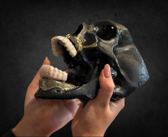

01Implantációs protetika
iBar
Egyedileg tervezett titán váz komplex implantációs esetekhezDigitális tervezéssel, az adott klinikai helyzethez igazodva készítjük el az iBar vázat a tervezéstől egészen a gyártásig.
Az ajánlat részletei →